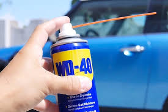

Необычные способы использовать WD-40 в автомобиле

WD-40 — универсальный спрей, который есть почти в каждом гараже.
Большинство знают его как средство для смазки и защиты от ржавчины,
но на самом деле у него гораздо больше интересных применений.
Вот несколько необычных способов, как WD-40 может помочь автовладельцу.
1. Защита резиновых уплотнителей от мороза
Зимой двери машины могут примерзать из-за влаги. Нанесите WD-40 на резиновые уплотнители — это создаст защитную плёнку, которая не даст влаге задерживаться и замерзать.
2. Удаление наклеек и следов скотча
Нужно снять старый стикер с бампера или убрать липкий след от скотча? Побрызгайте WD-40 на поверхность, подождите пару минут и аккуратно снимите наклейку. Следов клея не останется.
3. Чистка и защита аккумуляторных клемм
Коррозия на клеммах аккумулятора — частая проблема. Нанесите WD-40 на клеммы после очистки — это предотвратит повторное окисление и обеспечит хороший контакт.
4. Удаление смолы и следов насекомых
Если на капоте или стекле осталась смола от деревьев или пятна от насекомых, нанесите немного WD-40, подождите пару минут и вытрите тряпкой. Средство растворяет загрязнения без вреда для краски.
5. Влага — больше не проблема
WD-40 отлично вытесняет воду. Если замок автомобиля намок и начал заедать — побрызгайте внутрь. То же самое можно сделать со свечами зажигания или электрическими разъёмами, если туда попала вода.
6. Удаление скрипов
Скрипит петля двери или капота? Немного WD-40 — и проблема решена. При этом средство не только убирает скрип, но и защищает металл от коррозии.
Заключение: WD-40 — это не просто «жидкий ключ», а универсальный помощник, который может выручить в десятках ситуаций. Держите баллончик в багажнике — и многие мелкие проблемы с автомобилем будут решаться за минуты.
1. Защита резиновых уплотнителей от мороза
Зимой двери машины могут примерзать из-за влаги. Нанесите WD-40 на резиновые уплотнители — это создаст защитную плёнку, которая не даст влаге задерживаться и замерзать.
2. Удаление наклеек и следов скотча
Нужно снять старый стикер с бампера или убрать липкий след от скотча? Побрызгайте WD-40 на поверхность, подождите пару минут и аккуратно снимите наклейку. Следов клея не останется.
3. Чистка и защита аккумуляторных клемм
Коррозия на клеммах аккумулятора — частая проблема. Нанесите WD-40 на клеммы после очистки — это предотвратит повторное окисление и обеспечит хороший контакт.
4. Удаление смолы и следов насекомых
Если на капоте или стекле осталась смола от деревьев или пятна от насекомых, нанесите немного WD-40, подождите пару минут и вытрите тряпкой. Средство растворяет загрязнения без вреда для краски.
5. Влага — больше не проблема
WD-40 отлично вытесняет воду. Если замок автомобиля намок и начал заедать — побрызгайте внутрь. То же самое можно сделать со свечами зажигания или электрическими разъёмами, если туда попала вода.
6. Удаление скрипов
Скрипит петля двери или капота? Немного WD-40 — и проблема решена. При этом средство не только убирает скрип, но и защищает металл от коррозии.
Заключение: WD-40 — это не просто «жидкий ключ», а универсальный помощник, который может выручить в десятках ситуаций. Держите баллончик в багажнике — и многие мелкие проблемы с автомобилем будут решаться за минуты.